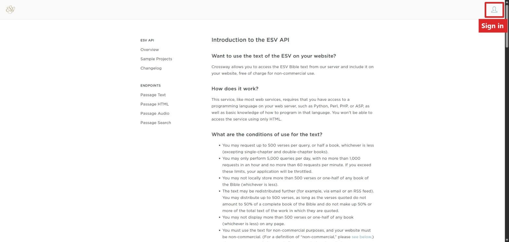
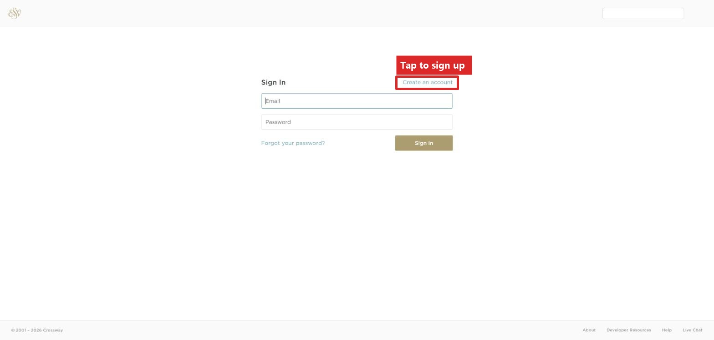
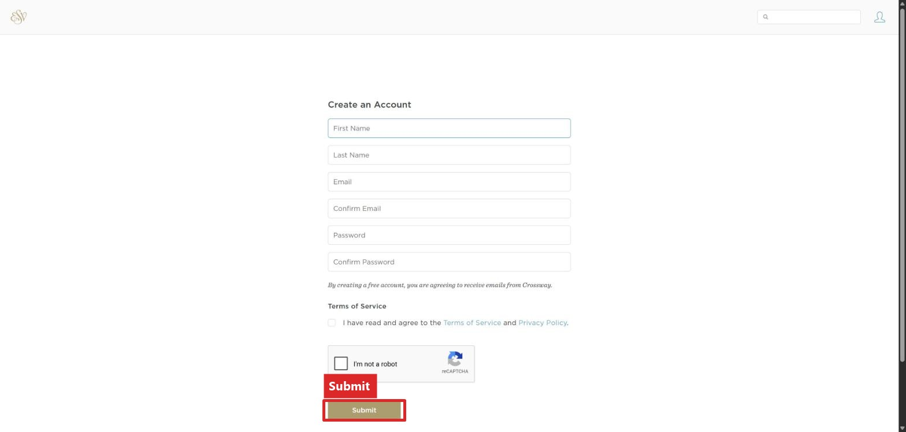
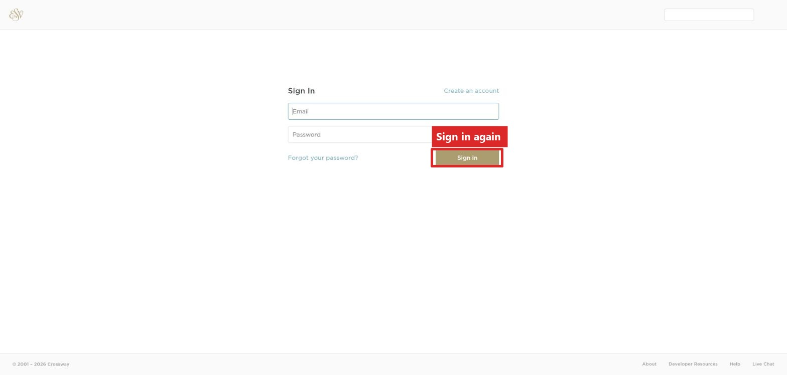
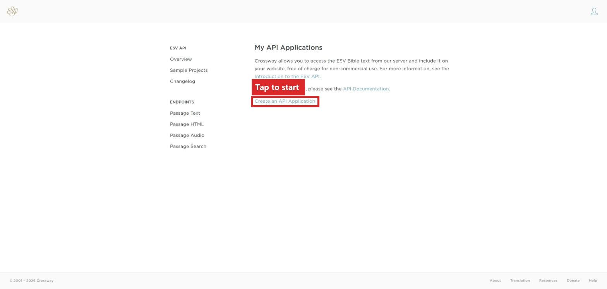
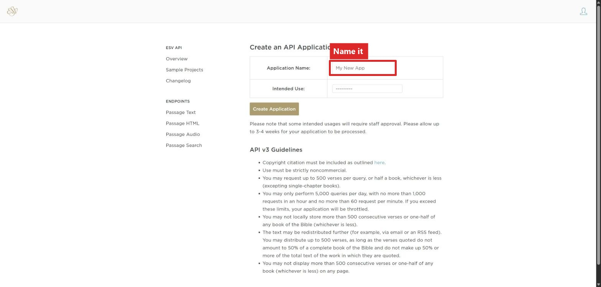
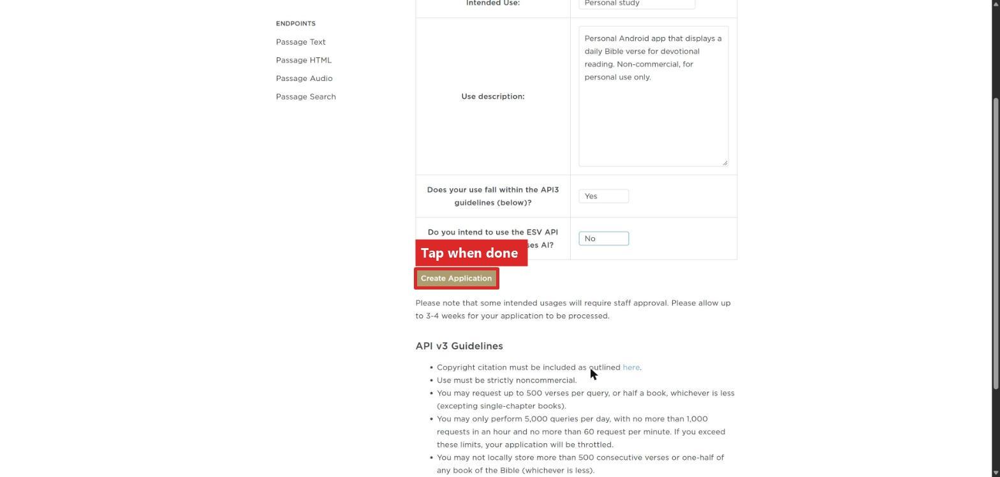
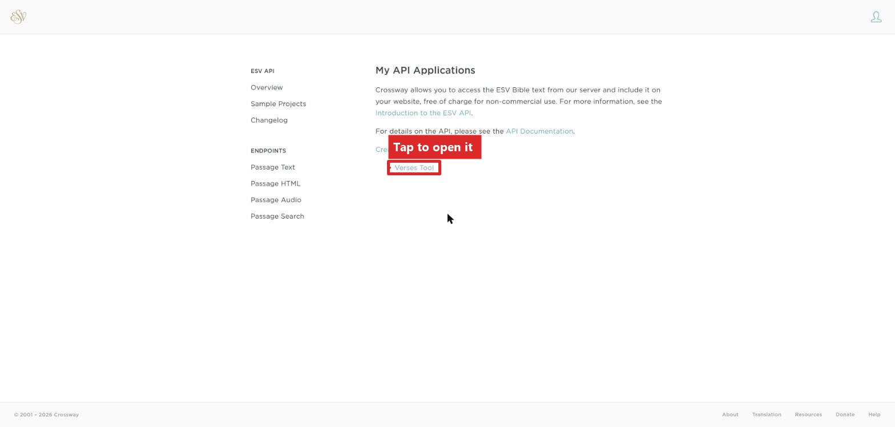
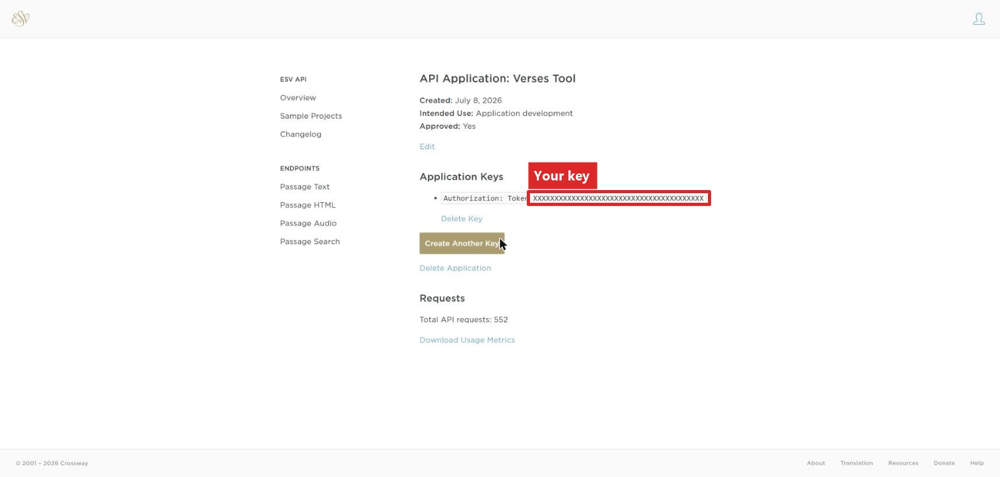

This takes about 5 minutes.
The Verses tool needs a free key from Crossway (the publisher of the ESV Bible) to show ESV text. Do these steps on a computer, then type the key into your Light Phone at the end.
Open api.esv.org in a browser.

Tap the person icon in the top right.

If you don't already have an account, tap Create an account and fill in your name, email, and a password.

After signing up, go back to api.esv.org and sign in again. This page keeps its own separate sign-in, so don't worry if it asks you again. This is expected.

You'll land on a page called My API Applications. The first time, it will be empty.

Tap Create an API Application.

Fill in a name (can be whatever you want) and a sentence about what you will use it for, then answer the other questions. Here's what a filled-out form looks like:

Tap Create Application.
Back on My API Applications, you'll now see the application you just made.

Tap it. You'll see a long string of letters and numbers next to Authorization: Token. That's your key.

Keep this screen pulled up. (Always a good idea to save this key somewhere else safe too)
On your Light Phone, go to Settings → Translations → API Keys → ESV API Key → Enter Key, and type the key you copied. (It's case-sensitive)
That's it! ESV passages will now work in Verses.